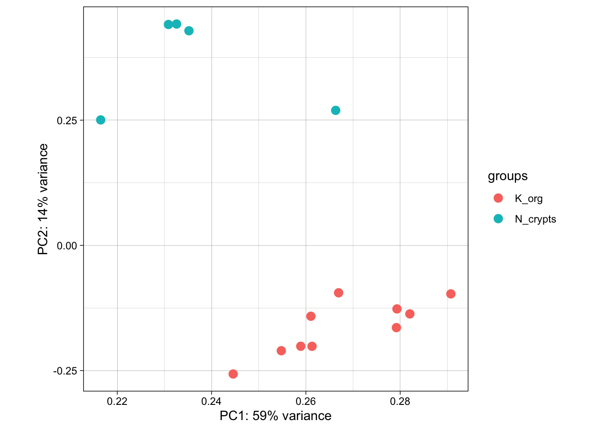

# Load the package
library(edgeR)Day 2
Objectives
- Data normalization with
edgeR - Diagnostic and exploratory analysis
- Resources for ChIP-seq and other omics data
- Inspecting data with Integrative Genome Viewer
Brief recap of the dataset
First of all, let’s make a recap on the dataset that we are going to analyze.
Each row of the counts table corresponds to a genomic interval within chromosome 12. Yesterday, we discussed about a standard analysis that requires a peak caller (such as MACS) used on the aligned reads to call peaks. While having called peaks for the sample is useful in a variety of ways, it is possible to perform a quantitative analysis without using called peaks. For example, in some cases, the regions of interest may be known in advance (such as a list known gene promoters).
This is actually our case, because the genomic regions that we’ll analyze are the active enhancers defined by ChromHMM. Indeed, using this machine-learning tool, we have characterized all the chromatin states in cells from CRC and normal colon organoids, by combining multiple histone mark ChIP-seq profiles including H3K27 acetylation. Among the different chromatin states, we were able to identify genomic regions with active enhancer features. On these regions, we counted reads from ChIP-seq on H3K27Ac for each organoid sample, and we have already did all these steps for you to speed up the process. NB: This is a compute-intensive step that might have take too long to run in the workshop! What you can see is the table with the region by sample counts.
Data Normalization: removing uninteresting differences
Since we want to highlight interesting biological differences between groups of samples in our dataset, the first thing to do is to ensure that we take into account and minimize all of the uninteresting differences between samples. This is accomplished by normalizing the data, a mandatory step before any differential analysis, if we want to make counts comparable both across samples and across different peaks, without any unwanted bias.
The main differences in the dataset that we want to normalize for are:
- the Sequencing Depth (expressed as the total amount of uniquely mapped reads in a sample): even between samples that were sequenced in the same sequencing run as part of the same experiments (but even more likely if samples have been generated in multiple batches), differences in the sequencing depth are expected. The reason why it’s important to take into account them is that these differences will reflect also at the level of the single genes: differences in sequencing depths can erroneously lead to the perception of genomic intervals having differential signals.

- Genomic interval length: this is a potential bias if we want to compare across group of intervals other than across samples. Indeed, the larger the genomic region, the higher the amount of reads that will be counted on it, and viceversa.

During the years, many approaches to data normalization have been attempted. In the table below, we summarized three common methods that can be employed to account for differences in library size (i.e. the sequencing depth) and the genomic interval length.
| Normalization Method | Accounted Factors | Description |
|---|---|---|
| CPM (counts per million) | Sequencing depth | Counts scaled by total read number |
| TPM (transcripts per million) | Sequencing depth and gene length | Counts per length of transcript (kb) per million mapped reads |
| FPKM/RPKM | Sequencing depth and gene length | Counts per kilobase of exon mapped reads per million mapped reads |
Notice the term “transcript” for TPM or “exon” in the method descriptions. Historically, these methods have been developed for RNA-seq data, dealing with gene expression counts, but they can be extended for other sequencing technologies. See also the Normalization Discussion section.
CPM, TPM and FPKM/RPKM are considered simple normalization methods, that can be useful to scale NGS data. However, there are also newer and more sophisticated approached have been developed to take into account technical variability and sample-specific biases. Two of these are the DESeq2’s median of ratios and the edgeR’s trimmed mean of M values. These are indeed more advanced statistical methods used for normalization and differential analysis in multiple sequencing data, including RNA-seq and ATAC-seq.
| Normalization Method | Accounted Factors | Description |
|---|---|---|
| DESeq2’s median of ratios1 | Sequencing depth and RNA composition | Counts are divided by a sample-specific size factor |
| edgeR’s trimmed mean of M values2 | Sequencing depth, RNA composition and gene length | Weighted trimmed mean of the log ratio of expression between samples |
As you can see from the table, with respect to the other methods, these ones can correct for one additional unwanted difference across libraries: the Composition Bias. As the name suggests, composition biases are formed when there are differences in the composition of sequences across libraries. Highly enriched regions consume more sequencing resources and thereby suppress the representation of other regions. Scaling by library size fails to correct for this as composition biases can still occur in libraries of the same size.

Out of all these, we will use one of the more advanced ones provided in the edgeR package which will be now introduced.
About the edgeR Package
Introduction
One of the aims of this workshop is to understand which genomic regions have a differential signal for H3K27Ac in our dataset, that is, have a difference in enhancer activty. In particular, we want to identify regions that are gaining more of this histone modification in CRC organoid samples, that might be enhancer regions with increased activity compared to normal organoids. To do so, we will compare H3K27Ac levels across samples and statistically assess and quantify differences arising between the conditions represented by our categories of samples (i.e., normal crypts organoids and CRC organoids). EdgeR is a widely used package for normalization and differential analysis on bulk sequencing data.
Detailed explanations of the statistical procedures implemented in the package are available in the package’s vignette.
We will start by loading the packages installed yesterday during the Set up section.
You can have a look at all the functions contained in the edgeR package by typing the following command:
# This should open a popup window in the lower right part of the screen displaying the functions in the package
??edgeRCreate a DGEList object with counts, sample metadata and design formula
In order for the package to read and understand our data and correctly perform the analysis, we need to organize our data in a way that the functions of the package can handle. This new object that we are going to create is called DGEList and there is a utility function to create one starting from the ingredients we currently have, (1) a table of counts (our counts object), (2) a table with sample information (our samples object) and (3) one last thing that we need to decide in order tell the package what comparisons we value the most, this is called a design formula.
Behind The Design Formula
The design formula should contain the name of a column of interest in our table of samples (that we can call factor) which stores the information related to the levels (or categories) we want to contrast. Let’s say that we have a dataset with two conditions (condition_1 vs condition_2) that we want to compare. The samples table will look like this, with three replicates for each of the two conditions:
| Sample Code | Patient | Condition |
|---|---|---|
| SA1 | Pt1 | Condition_1 |
| SA2 | Pt2 | Condition_1 |
| SA3 | Pt3 | Condition_1 |
| SA4 | Pt1 | Condition_2 |
| SA5 | Pt2 | Condition_2 |
| SA6 | Pt3 | Condition_2 |
Paired Analyses
The optimal setting for the analysis (decided experimentally) is to have paired samples. This might be a somewhat difficult concept to grasp, but for our table above this means that every Patient contributes equally to the two categories in the Condition columns that we are interested in. In this setting, we are fully capable of exploiting the statistics behind the tools we use for differential analysis by correcting for the uninteresting differences arising between patients. This aspect greatly helps the analysis and improves the statistical validity of the results.
Remember, this is something achieved by deciding the experimental setting beforehand! Ideally this should be done through a collaborative effort between bioinformaticians/statisticians and bench scientists!
If we are interested in performing a differential expression analysis comparing condition_1 versus condition_2, then our design formula should specify the Condition factor.
üí° What is the column that we are interested in when specifying the design formula using in our
samplestable?
Now that we also understand the design formula, we can create the DGEList object with the data that we loaded beforehand, but first we need to check that the columns of the counts table are in the same order of the rows of the sample table, this is important since we want to be sure that the right levels of expression are associated to the right sample.
all(rownames(samples) == colnames(counts))[1] TRUEFurther, we will get rid of non-useful columns in our sample metadata:
samples <- dplyr::select(samples, -c(sizeFactor, Treatment))And now we can build the object:
# Create a design formula. Notice that we are creating an object called "factor"
sample_group <- factor(samples$groups, levels=c("N_crypts", "K_org"))
design <- model.matrix(~ sample_group)
# Create a `DGEList` object and call it dds
dds <- DGEList(counts = counts, samples = samples)
# Let's save the `design` in the dds object
dds$design <- designRemeber that dds is just a list in R which can be updated with different elements.
We can now remove the counts table from our R environment since that information is stored in our DGEList object now. This is useful to save on memory space!
# Remove original `counts` table to save memory space
rm(counts)
gc()Great! You have created a DGEList object which we called dds, this contains all the information related to the counts table and the sample information table in one spot. We can have a look at the sample information table and the counts table in the dds object like so:
# Look at the table with sample information
head(dds$samples)| group | lib.size | norm.factors | groups | Tissue | SampleID | |
|---|---|---|---|---|---|---|
| SQ_2157 | K_org | 69284 | 1 | K_org | 4KE | SQ_2157 |
| SQ_1990 | K_org | 96388 | 1 | K_org | 8KE | SQ_1990 |
| SQ_2010 | K_org | 112029 | 1 | K_org | 10KE | SQ_2010 |
| SQ_2163 | K_org | 169859 | 1 | K_org | 13KE | SQ_2163 |
| SQ_2204 | K_org | 108070 | 1 | K_org | 18KE | SQ_2204 |
| SQ_2212 | K_org | 162626 | 1 | K_org | 11KW | SQ_2212 |
We can see that some new columns were added to the samples table present in our DGEList object when we created it (the group, lib.size, norm.factors columns)! These will be used by edgeR later on for data normalization!
We can also take a look at the table containing the counts, which is just another element of our DGEList object:
# Look at the table with count information
head(dds$counts)| SQ_2157 | SQ_1990 | SQ_2010 | SQ_2163 | SQ_2204 | SQ_2212 | SQ_2216 | SQ_2222 | SQ_2288 | SQ_2303 | SQ_2298 | SQ_2145 | GSM2058021 | GSM2058022 | GSM2058023 | |
|---|---|---|---|---|---|---|---|---|---|---|---|---|---|---|---|
| reg_6364 | 8 | 1 | 1 | 97 | 1 | 13 | 3 | 12 | 24 | 19 | 47 | 4 | 85 | 34 | 185 |
| reg_6365 | 26 | 20 | 27 | 47 | 58 | 67 | 47 | 52 | 65 | 21 | 43 | 11 | 79 | 56 | 216 |
| reg_6366 | 1 | 9 | 1 | 6 | 1 | 1 | 1 | 7 | 1 | 1 | 45 | 1 | 65 | 44 | 169 |
| reg_6367 | 1 | 1 | 1 | 21 | 2 | 14 | 4 | 5 | 2 | 1 | 52 | 29 | 132 | 66 | 188 |
| reg_6368 | 1 | 1 | 15 | 17 | 6 | 10 | 6 | 1 | 11 | 5 | 11 | 3 | 11 | 23 | 56 |
| reg_6369 | 184 | 304 | 215 | 661 | 278 | 519 | 466 | 435 | 500 | 267 | 1045 | 297 | 1950 | 1562 | 3860 |
üí° In R, list elements are accessible with the
$accessor. Our dds object is indeed a list made up of three elements, the counts table, the samples table and the design table, these are accessible using$like we did above.
Normalizing Count Data
As we have discussed above, normalization is an integral step to the downstream analysis and necessary for differential comparison. In this section we will normalize our data using the calcNormFactors function of the package. As we have previously introduced, edgeR uses the trimmed mean of M-values (TMM) method to calculate a set of size factors to minimize the log-fold change differences occurring between samples (uninteresting) for the majority of genomic intervals. The counts for each sample get then multiplied by the scaling factors to generate what is referred to as effective library size, which will be used for all downstream analyses.
# Call the function to normalize count data
dds <- calcNormFactors(dds)We can check the values of the computed size factors by doing the following, note how there are as many size factors as there are samples and they are inserted in a column of the samples table named norm.factors in our DGEList object:
dds$samples| group | lib.size | norm.factors | groups | Tissue | SampleID | |
|---|---|---|---|---|---|---|
| SQ_2157 | K_org | 69284 | 0.8333710 | K_org | 4KE | SQ_2157 |
| SQ_1990 | K_org | 96388 | 0.9440527 | K_org | 8KE | SQ_1990 |
| SQ_2010 | K_org | 112029 | 1.0442464 | K_org | 10KE | SQ_2010 |
| SQ_2163 | K_org | 169859 | 1.0626712 | K_org | 13KE | SQ_2163 |
| SQ_2204 | K_org | 108070 | 0.9248773 | K_org | 18KE | SQ_2204 |
| SQ_2212 | K_org | 162626 | 0.8631713 | K_org | 11KW | SQ_2212 |
| SQ_2216 | K_org | 166803 | 0.8058559 | K_org | 24KE | SQ_2216 |
| SQ_2222 | K_org | 126541 | 1.0226951 | K_org | 22KE | SQ_2222 |
| SQ_2288 | K_org | 194224 | 1.1369122 | K_org | 36KE | SQ_2288 |
| SQ_2303 | K_org | 92047 | 0.8559558 | K_org | 41KE | SQ_2303 |
| SQ_2298 | N_crypts | 106228 | 1.4064150 | N_crypts | CR_41_mp | SQ_2298 |
| SQ_2145 | N_crypts | 31407 | 1.3095585 | N_crypts | CR_28_mp | SQ_2145 |
| GSM2058021 | N_crypts | 176893 | 0.9919079 | N_crypts | CR_28 | GSM2058021 |
| GSM2058022 | N_crypts | 119979 | 1.0117534 | N_crypts | CR_29 | GSM2058022 |
| GSM2058023 | N_crypts | 287106 | 0.9678679 | N_crypts | CR_37 | GSM2058023 |
üí° NOTE: Although
edgeRdoes not use normalized counts as input for the differential analysis (the normalization process happens inside automatically), the normalized counts we just generated are definitely useful when plotting results and performing clustering.
Normalization discussion
Normalization of experimental data is particularly important in ChIP-seq (and ATAC-seq) analysis, and may require more careful consideration than needed for RNA-seq analysis. This is because the range of ChIP-seq experiments covers more cases than RNA-seq, which usually involve a similar set of possible expressed genes and/or transcripts, many of which are not expected to significantly change expression. ChIP, ATAC, and similar enrichment-based sequencing data may not follow the assumptions inherent in popular methods for normalizing RNA-seq data, as well as exhibiting different types of efficiency and other biases.
Referene reads
One important concept is that for the type of data we are dealing with in DNA enrichment assays, the reads that are used as the reference for normalizing are as important as (or even more than) the normalization method itself. While in RNA-seq experiments the expression matrix can be normalized directly, based on the reads that uniquely overlap genes or transcripts, this does not apply to a count matrix based on a consensus peakset.
The DiffBind package is a tool that has been designed specifically for ChIP-seq data analysis. It is interesting to notice that using this tools, you can normalize your data using two different set of reference reads: - one uses all the reads (the full library size) - the other normalizes bases only on the total number of reads in the consensus peakset (namely, the effective library size). The major difference is that the full library size takes into account also “background” reads, that are most of the reads in a ChIP-seq sample library! In brief, the fact that we consider the background might reflect in a less biased normalization calculation.
Take home message: > In this workshop, to make things less complex, we used a “common” normalization method without any prior in-depth analysis on the best strategy to normalize these specific data in this context. But just keep in mind that some normalization methods might be more “correct” than others in some circumstances.
Transforming Count Data for visualization purposes
After we have normalized our data, we need to perform a transformation. There are many ways to transform count data but all of them achieve the goal of removing the dependence between variance and mean counts across samples (something called homoscedasticity) in order to highlight interesting and biologically relevant expression trends even for genes expressed at lower values. We transform the data using a function provided in the edgeR package called cpm() which also performs a logarithmic transformation which has the effect of reshaping the data to achieve gene-wise distributions which resemble a normal distribution. Without getting too much into the details of the workings of the function, we will transform the data and then look at how the gene-wise relationship between the mean and variance in our normalized data changes before and after the transformation. The purpose of this procedure is to allow proper data visualization later in the analysis, the transformed data is NOT used for the differential expression analysis which instead starts from raw counts!
The following code is used to plot the mean/standard deviation relationship of every gene before the transformation.
library(vsn)
# Plot before data transformation
meanSdPlot(dds$counts)Transform the data and then plot the mean/standard deviation relationship after the transformation.
# Transform the data with a log2 transform (watch how we create a new variable for it)
log2dds <- cpm(dds, log=TRUE)# Check out the transformed values (notice how we now have floating point values and some are even negative!)
head(log2dds)| SQ_2157 | SQ_1990 | SQ_2010 | SQ_2163 | SQ_2204 | SQ_2212 | SQ_2216 | SQ_2222 | SQ_2288 | SQ_2303 | SQ_2298 | SQ_2145 | GSM2058021 | GSM2058022 | GSM2058023 | |
|---|---|---|---|---|---|---|---|---|---|---|---|---|---|---|---|
| reg_6364 | 7.261491 | 4.693504 | 4.550522 | 9.109187 | 4.637530 | 6.748099 | 5.217372 | 6.749666 | 6.949194 | 8.000180 | 8.363990 | 6.809124 | 8.963787 | 8.204418 | 9.410705 |
| reg_6365 | 8.861623 | 7.874496 | 7.940615 | 8.104651 | 9.217110 | 8.943007 | 8.509886 | 8.702827 | 8.272585 | 8.136559 | 8.241717 | 8.141225 | 8.861440 | 8.895419 | 9.629675 |
| reg_6366 | 5.009203 | 6.830221 | 4.550522 | 5.588723 | 4.637530 | 4.460066 | 4.480605 | 6.108000 | 4.279070 | 4.785443 | 8.304149 | 5.292741 | 8.589938 | 8.559744 | 9.283187 |
| reg_6367 | 5.009203 | 4.693504 | 4.550522 | 7.035881 | 5.124956 | 6.840672 | 5.480357 | 5.742032 | 4.581540 | 4.785443 | 8.503560 | 9.491770 | 9.583393 | 9.125609 | 9.433409 |
| reg_6368 | 5.009203 | 4.693504 | 7.160908 | 6.769029 | 6.227152 | 6.428312 | 5.895332 | 4.499083 | 6.015691 | 6.291778 | 6.467791 | 6.456553 | 6.277538 | 7.674925 | 7.757593 |
| reg_6369 | 11.644546 | 11.712362 | 10.855382 | 11.844212 | 11.449227 | 11.857996 | 11.765514 | 11.721151 | 11.154281 | 11.732854 | 12.775053 | 12.820937 | 13.441920 | 13.653092 | 13.763350 |
# let's plot the transformed values
meanSdPlot(log2dds)It is clear how regions with high mean signal (on the right) are now comparable in terms of standard deviation to regions with lower mean signal (on the left). Normally this plot should look slightly different in terms of density, but remember that we are considering only a subset of the dataset.
Assessing Sample-to-sample Relationships
One way to understand trends in our data and the present of poor quality or outlier samples is to perform exploratory analyses through visualization.
Of particular interest is the presence of technical effects in the experiment, such as batch effects.
In R in general, data visualization is aided by the presence of many packages (on top the basic plotting functionality) which can handle diverse kinds of data visualization tasks (from traditional plots to visualizing tabular data through heatmaps). We will encounter two of these packages, one is ggplot2 and the other one is pheatmap.
Hierarchical clustering
One of the main strategies for checking the consistency of our dataset is to cluster samples based on their complete H3K27 acetylation profile (which is considered within 1581 genomic regions in our dataset). This will allow us to spot the presence of outliers in the data and look for consistent profiles of H3K27Ac across biological replicates, which we expect. Use the code below to plot a heatmap of normalized (and transformed) count values for our samples. Since plotting the full count table can be computationally expensive, we might want to subset it to the 200 genomic regions with stronger H3K27Ac signal in the dataset.
library("pheatmap")
# Take the top 200 genomic regions in the dataset
select <- order(rowMeans(log2dds),
decreasing=TRUE)[1:200] # Select number of regions
# Create another table for annotating the heatmap with colors
df <- as.data.frame(samples[,c("groups","Tissue")])
# Draw the heatmap using the `pheatmap` package
pheatmap(log2dds[select,], cluster_rows=FALSE, show_rownames=FALSE,
cluster_cols=TRUE, annotation_col=df)What type of assessment would you make about the consistency of the samples across these top active 200 regions ? Do they cluster (a synonym for similar) based on the biological condition of our interest?
Sample-to-sample Distances
Another way to get a sense of the global relationship between samples is to check for how distant samples are between themselves. This analysis of pairwise distances looks at the acetylation signal of all 1581 genomic regions in the dataset and determines which samples have a more or less similar or different signal value for each. We expect biologically similar samples to have very little difference.
library(RColorBrewer)
# Compute distances
sampleDists <- dist(t(log2dds))
# Organize
sampleDistMatrix <- as.matrix(sampleDists)
colors <- colorRampPalette( rev(brewer.pal(9, "Blues")) )(255)
# Plot with `pheatmap`
pheatmap(sampleDistMatrix,
clustering_distance_rows=sampleDists,
clustering_distance_cols=sampleDists,
color = colors,
annotation_col = df)# Free up memory space
rm(sampleDistMatrix)
gc() used (Mb) gc trigger (Mb) limit (Mb) max used (Mb)
Ncells 1754271 93.7 3398975 181.6 NA 2386170 127.5
Vcells 3453495 26.4 8388608 64.0 16384 5777967 44.1üí° What type of assessment would you make about the heatmap you just produced? Is the analysis highlighting biologically relevant differences in the dataset?
Dimensionality reduction with Principal Component Analysis (PCA)
Another useful approach for understanding the main variability axes in our data is to compute and plot a PCA. Without getting into the details, PCA takes our H3K27Ac data and outputs its principal components, which encode the main sources of variability in the data. Ideally, we want the samples to have variability caused by the biological effect of our interest (in this case the differences between normal and tumor organoids), but this might not be the case. By plotting and coloring the points by different covariates (i.e. subject or condition) we are able to understand where the variability comes from and if there is any detectable batch effect. Use the code below to generate a scatter plot of PCA coordinates and color them to understand what causes the variability in the data.
library(ggplot2)
# Calculate principal components and percentage of variance
pcs <- prcomp(log2dds, scale = TRUE)
percentVar <- round(100 * summary(pcs)$importance[2,])
pcaData <- as.data.frame(pcs$rotation) %>% merge(samples, by=0)
# Plot (this time with ggplot2!!)
ggplot(pcaData, aes(PC1, PC2, color=groups, shape=Tissue)) +
geom_point(size=3) +
xlab(paste0("PC1: ",percentVar[1],"% variance")) +
ylab(paste0("PC2: ",percentVar[2],"% variance")) +
theme_classic()
üí° What can you say about this PCA? Are the samples positioning themselves based on their biological condition? How does this information relate to the other plots we produced above?
# Let's clean some space up!
rm(pcs)
rm(pcaData)
rm(log2dds)
gc()Now that we have plotted all the main diagnostic information related to the dataset and we have a bit of a grasp of it, we can start thinking about testing for differentially active enhancer regions.
Online Resources and Databases for omics data
The seciton below briefly introduce you to the description and usage of some very useful online resources for ChIP-seq public data and also other omics data. Take a closer look to explore them, you might need them in the future in order to complement your future experiments!
Poor man’s guide to omics
When approaching a new problem, you might conceive multiple hypotheses that could instruct a wide variety of experimental approaches. However, you have neither the time, nor the money or the inclination to perform all of these experiments. Chances are, though, that somewhere in a server there is a dataset that can help you, be it a ChIP-seq dataset or any other omic. They may not give you an answer outright, but they’ll help you prune your hypotheses and only keep the ones that have some foundation. After all, while big data analysis often results in false positives, or at least positives that are contingent to a specific model, it is very useful to avoid pursuing roads for which no evidence is found in datasets.
This section aims to give you resources that you can employ to perform simple analyses that prevent you from wasting your time and allow you to focus on the experiments that matter.
Over the years, multiple consortia have assembled these datasets into curated collections, and new datasets are published with almost every new paper, neatly stored into various sites.
Here we provide a handful of key databases and characteristics of the main ones, as well as a list of other databases that may be useful for more specific questions.
ENCODE: the encyclopedia of DNA elements
The closest to the object of the workshop, over more than 20 years of activity the ENCODE consortium is the biggest effort in functional genomics in the world, assembling thousands of datasets. You can easily browse their portal by theme and find ready-made datasets that pertain to your field. Once you have your dataset (or datasets) of choice, you only have to browse it with the help of this workshop’s scripts or visualize it, for example with IGV.
GEO: The Gene Expression Omnibus
This portal is almost ubiquitous in publications - in fact, nearly all gene expression datasets used in publications, both bulk and single cell, are published on the GEO, a service handled by the NCBI. The GEO datasets can be accessed from papers, but also directly from the portal, and the neat thing is that they are generally well annotated so that you can understand how specific experiments were performed. They have specific files that tell you how the data was generated. This kind of information can be complementary to epigenome data, or can inform derivative work giving you invaluable insight into a model you want to adopt.
TCGA: The Cancer Genome Atlas
Among the biggest efforts in contemporary medical research, spearheaded by the NIH. The Cancer Genome Atlas has gathered transcriptomics, methylation, and chromatin accessibility data for an incredibly wide array of malignancies, and it keeps expanding with new cohorts of patients, curated by individual contributors. While it is a specific resource pertaining to oncology, its wealth of controls and diversity of malignancies makes it invaluable for anybody working on human biology - after all, most fundamental biology experiments are performed on cancer cell lines.
The Human Cell Atlas
Arguably the biggest ongoing sequencing project in the world, the Human Cell Atlas aims to fully leverage single cell transcriptomes to define every cell type in the human body. Currently hosting data for close to 60 million sequenced cells and still counting, this is the largest single-cell resolved gene expression resource currently available for non-diseased tissue. Allows downloads in formats that are ‘easily’ browsed - meaning you don’t have to do core processing yourself.
Additional links:
Roadmap consortium Generated tracks for multiple modifications, and produced ChromHMM to sort them out
EBI Bioimage Archive European resource for bioimages. Pretty unique and specific, rare type of datasets.
GTEX Tissue-specific genotype regulation - a complex database that can tell you whether your gene of interest works in the context you study.
Brown university collection - way better than ours! Collection of resources, including some of those we showed above. Take a look when you need to find some new source of data!
NIH’s collection - even better than Brown’s! Includes even more well-categorized resources.